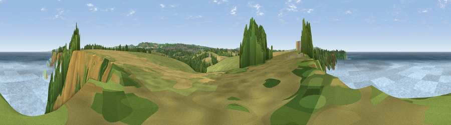

Viewpoint near Portreath
#6965 in England · top 14% of its area beats it · near PortreathWhere it is
The exact computed spot (SW 62675 43225). Click the marker for map links.
The view, rendered

A 360° render of this exact spot computed from the terrain model, tree cover and land cover — summer colours, afternoon light, calibrated against photographs of famous viewpoints. Real trees, hedges and buildings will differ in detail.
The panorama
Grey silhouette: terrain skyline in each direction (720 bearings, Earth curvature and refraction included). Dashed green: skyline with trees (+15 m) and buildings (+8 m) as obstacles. Blue strip: how far the ground is visible on each bearing.
Where the view opens
Wedge length = distance to the farthest visible ground on that bearing (vegetation-aware). Rings at 10, 25 and 50 km.
What fills the view
73% water · 13% grassland · 8% woodland · 3% cropland · 2% bare ground ·
Angular shares of the visible panorama (visual magnitude), not map area. Landscape diversity 0.40 (0–1 Shannon).
Key numbers
More beautiful places nearby
The staircase of upgrades: each row has a higher view potential than everything closer. Driving times are estimates from straight-line distance, calibrated against real road routing — check an actual route before setting out.
| Place | Direction | Drive | Score |
|---|---|---|---|
| Viewpoint near Brea | SE · 5 km | ~11 min | 74.1 |
| Viewpoint near Illogan Highway | ESE · 6 km | ~12 min | 75.8 |
| Carn Brea | ESE · 6 km | ~13 min | 81.1 |
| St Agnes Beacon | NE · 11 km | ~21 min | 86.1 |
| Rosewall Hill | WSW · 14 km | ~26 min | 88.0 |
| Viewpoint near Combe Martin | NE · 143 km | ~166 min | 88.9 |
| Holdstone Hill | NE · 144 km | ~167 min | 90.2 |
| The Knoll | ENE · 195 km | ~214 min | 91.0 |
50.24126, -5.32977 · source: screening · position refined by local search. Computed location — check access rights before visiting.